The master manual. An ultra-lightweight, open-source reader for PDF, EPUB, MOBI, CBZ/CBR, DjVu, XPS, Markdown and CHM.
Version 0.4.2-beta · “BabyKoala”
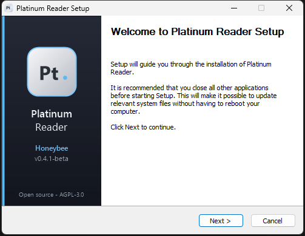
The installer. It asks whether to install just for you (no admin rights) or for all users in Program Files (admin).
Windows (PowerShell): irm https://raw.githubusercontent.com/mishuk-11/platinum-reader/main/install.ps1 | iex Linux / macOS: curl -fsSL https://raw.githubusercontent.com/mishuk-11/platinum-reader/main/install.sh | sh
Both download the newest release from GitHub and check its SHA-256 checksum before installing. Silent installs: setup.exe /S /CurrentUser or setup.exe /S /AllUsers. All commands are in install-commands.txt.
Settings → Make Platinum Reader the default… opens Windows’ Default apps page. Choose Platinum Reader for each file type. Windows 11 only lets you pick defaults; once you do, files show Platinum Reader’s minimal type icons (PDF, EPUB, MD, …).
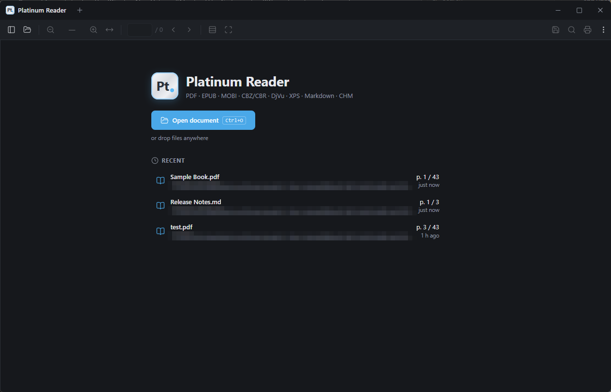
Home: open a document, drop files anywhere, or reopen a recent one at the page where you stopped.
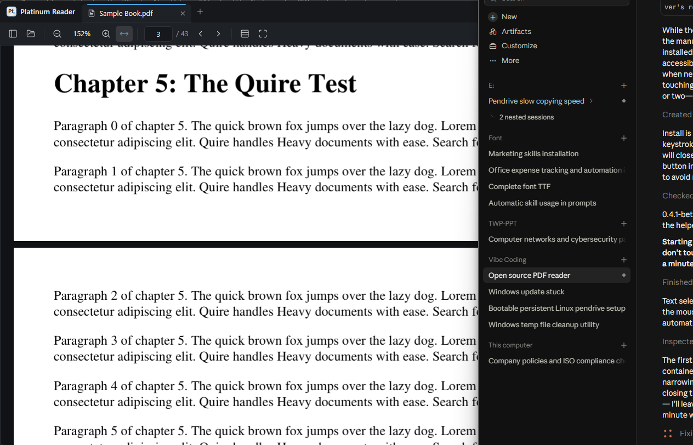
The reading view with the tab bar and toolbar.
| Toolbar | What it does |
|---|---|
| Outline | Table of contents sidebar (Ctrl+B). |
| − 100% + | Zoom out / presets / zoom in. Ctrl+mouse wheel also zooms. |
| ↔ | Fit width. |
| Page box | Shows the current page. Click it, type a number, press Enter (Ctrl+G). |
| View mode | Continuous scrolling, facing pages, or single page. |
| Full screen | F11: one page at a time, nothing else on screen. Esc to exit. |
| Save | Writes your highlights into the PDF (Ctrl+S). Lights up when there are unsaved changes. |
| Find · Print · ⋮ | Search, print (Ctrl+P), and the main menu. |
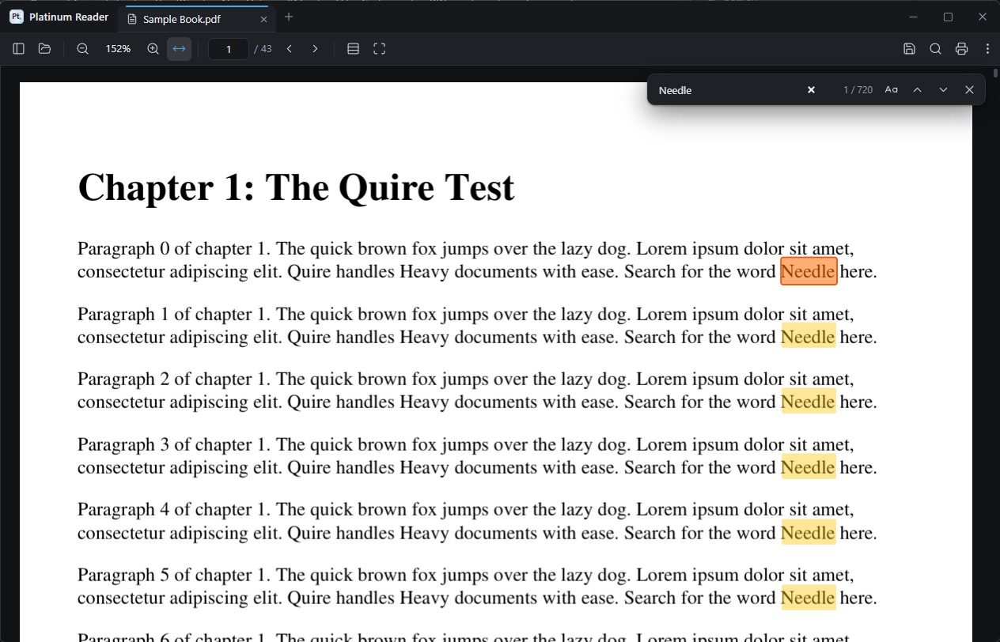
Every match is highlighted; the current one is orange. The counter shows “1 / 720”.
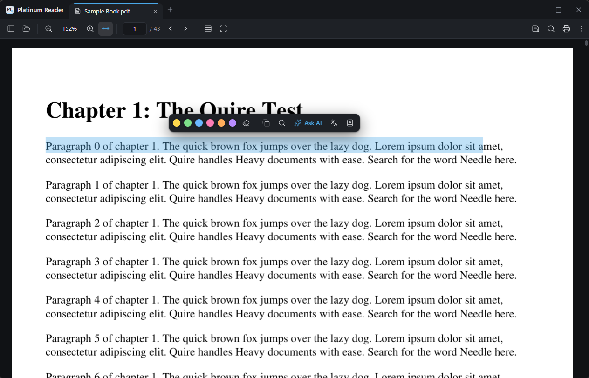
Select text and a floating menu appears: 6 highlight colors, the eraser, copy, web search, Ask AI, Translate and Define.
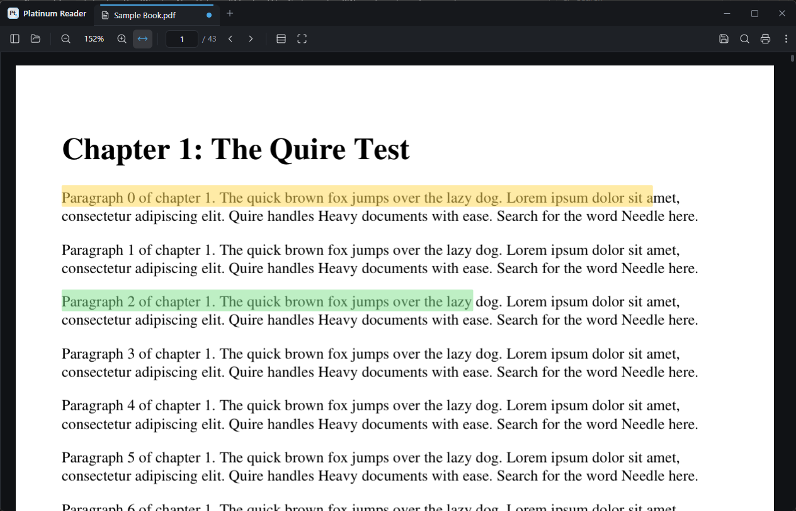
Highlights in yellow and green. The blue dot on the tab means “not saved into the file yet”.
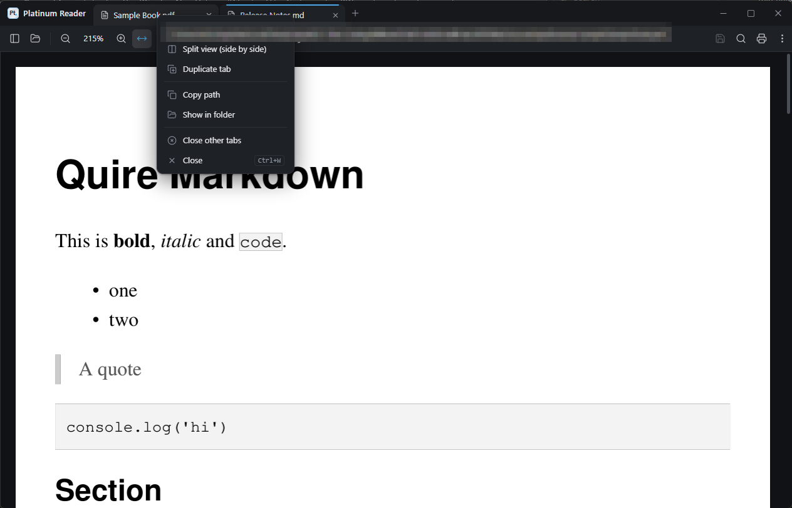
Right-click a tab for more options.
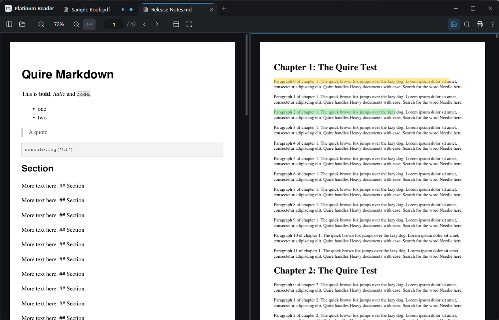
Split view: two documents side by side, each with its own zoom and page. Drag the divider to resize.
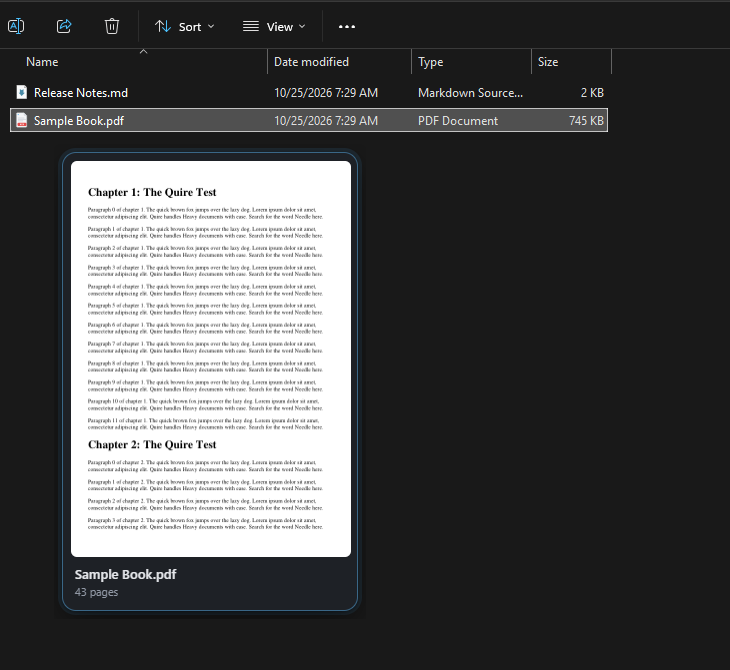
In File Explorer: press and hold a PDF for 3 seconds without moving, and its first page appears. Let go and it’s gone.
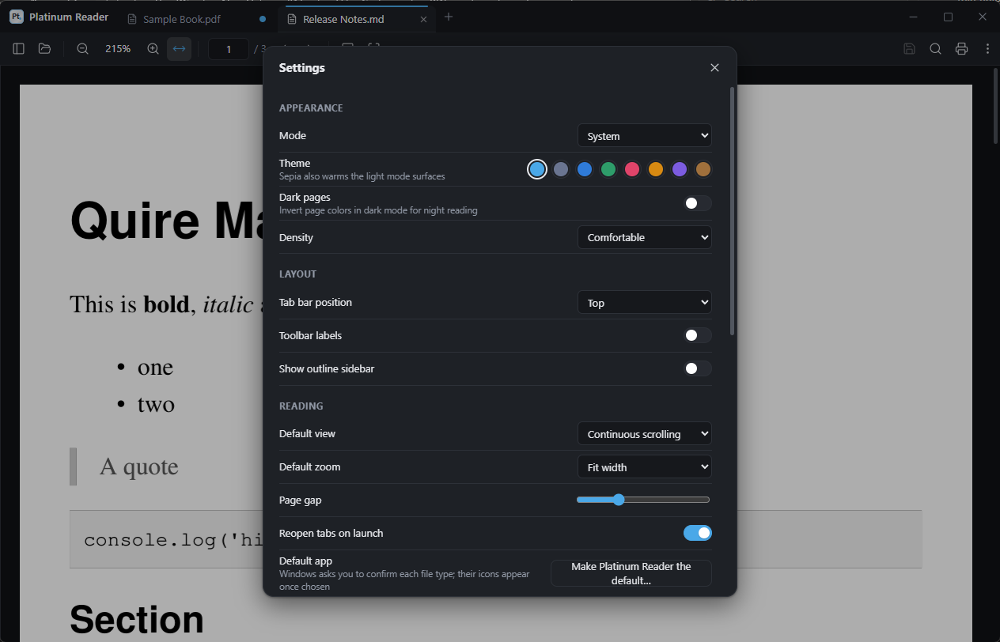
Settings (Ctrl+,).
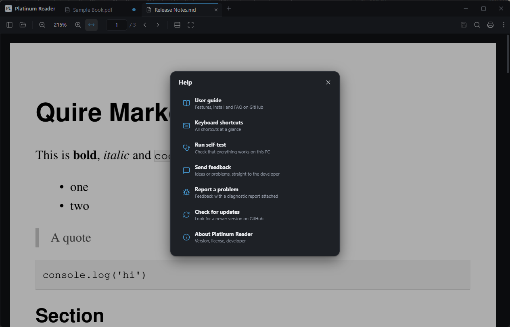
⋮ → Help, or F1.
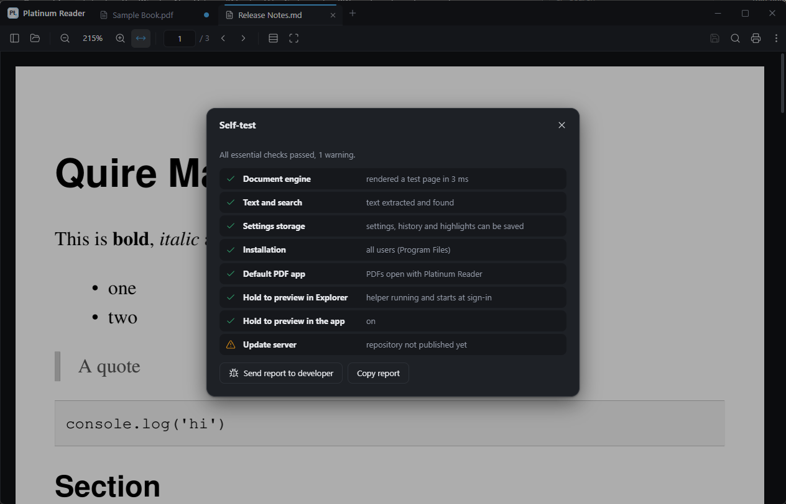
The self-test checks the engine, search, storage, installation, default app, the background helper and the update server.
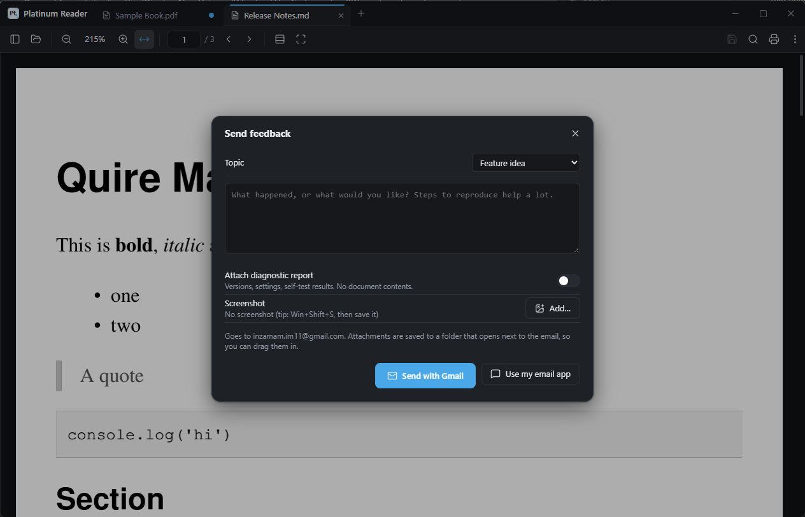
Send feedback: pick a topic, write a message, optionally attach the diagnostic report and a screenshot.
.js extension to add selection buttons, menu items and document hooks. See EXTENSIONS.md.| Keys | Action | Keys | Action |
|---|---|---|---|
| Ctrl+O | Open | Ctrl+S | Save highlights |
| Ctrl+Shift+S | Save as | Ctrl+W | Close tab |
| Ctrl+N | New window | Ctrl+Tab | Next tab |
| Ctrl+F | Find | Ctrl+G | Go to page |
| Ctrl+B | Outline | Ctrl+H | History |
| Ctrl+, | Settings | F1 | Help |
| Ctrl+P | F11 | Full screen | |
| Ctrl + / − | Zoom | Ctrl+0 | Fit width |
| Problem | Fix |
|---|---|
| Files show a blank icon | Choose Platinum Reader as the default for that type (Settings → Make Platinum Reader the default…). Windows 11 only shows an app’s icons for types you assigned to it. |
| Hold to preview does nothing | Run the self-test (F1). “Hold to preview in Explorer” should pass. Keep the mouse completely still for 3 s. Search results and some cloud folders aren’t supported. |
| Send with Gmail shows a login page | Sign in to Gmail in your browser, or use “Use my email app”. |
| Update check says “not published yet” | Normal until the first public release is on GitHub. |
| Something else | F1 → Report a problem. It includes everything the developer needs. |
| Version | Codename | Highlights |
|---|---|---|
| 0.4.2-beta | 🐨 BabyKoala | First public release on GitHub: one-line install, publisher name, no extra helper window, About icon showdown |
| 0.4.1-beta | 🐝 Honeybee | Save / Save as into PDF, unhighlight, styled installer, manuals, test kit |
| 0.4.0-beta | 🐝 Honeybee | File-type icons, Help, self-test, feedback |
| 0.3.0-beta | 🥕🐰 Carrotbunny | Renamed to Platinum Reader, hold to preview, updates, Program Files install |
| 0.2.0 | 🧚🚀 FairyRocket | Extensions, developer mode (as Quire) |
| 0.1.0 | 🍒 Cherry Lava | First release (as Quire) |
Every codename hides a little surprise in ⋮ → About. Try pressing and holding things there, clicking the developer’s name more than ten times, or typing a certain bee’s favourite word while reading.
Platinum Reader is open source (AGPL-3.0). Developed by Inzamam Islam · github.com/mishuk-11 · inzamam.im11@gmail.com